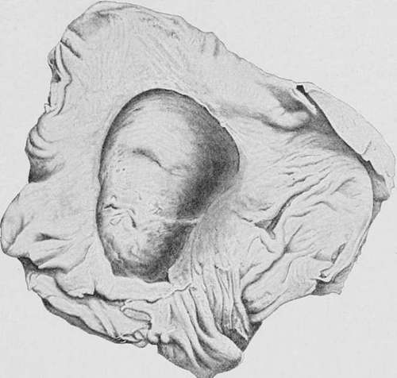

Case XXI
Description
This section is from the book "Cancer And Other Tumours Of The Stomach", by Samuel Fenwick. Also available from Amazon: Cancer and other tumours of the stomach.
Case XXI
A man, sixty-five years of age, was admitted into hospital under our care for haematemesis. He stated that about two years previously he had been attacked by severe pain in the stomach and sickness, which had recurred on several occasions but had never been followed by jaundice. Two days before admission he had vomited a large quantity of bright blood after suffering for some time from discomfort and distension after food. On examination the stomach was found to be much dilated, and just above and to the right of the umbilicus a hard, smooth, and fixed tumour could be felt. At certain times the percussion-note over the swelling was dull, while at others a splashing sound was elicited. Inflation of the stomach and colon neither affected the position of the tumour nor its percussion-note. After ten weeks' treatment he was found to have become very thin, and still suffered from attacks of pain and vomiting. A surgeon was therefore asked to make an attempt to relieve the pressure on the duodenum. At the operation the tumour was found to be situated deeply behind the small intestine, and was so hard and fixed that a diagnosis of carcinoma was given and the wound was closed. Death occurred next day.
Fig. 53.-Drawing of the posterior wall of a stomach, showing a large chronic ulcer, through which the pancreas projects in the form of a tumour. (London Hospital Museum.).
Necropsy. The head of the pancreas was occupied by a cyst the size of a Tangerine orange, which had pressed upon and partially obstructed the duodenum. The cyst contained a quantity of brownish fluid, but no connection between its cavity and the pancreatic duct could be found. No ulcer or cicatrix existed in the stomach or duodenum, and there was no evidence of carcinoma in any organ.
In very rare cases the pancreas projects into the cavity of the stomach through the floor of a large chronic ulcer, and gives rise to a palpable tumour.
Kollrnar has recorded the case of a man who died with extreme cachexia, an abdominal tumour, and other signs of cancer of the stomach. At the necropsy the naked-eye appearances of the disease seemed to confirm the diagnosis, but when the tumour was incised it was found to consist of a pot-shaped ulcer of the stomach with greatly thickened edges, through the base of which the head of the pancreas projected. If a tumour of this description can occasionally puzzle the pathologist, it is hardly surprising that the surgeon is not infrequently confused by the condition which he detects upon digital exploration of the stomach. The difficulties that may attend this method of diagnosis are well illustrated by a case cited by Palawski, where an exploratory operation was undertaken on account of continuous pain, vomiting, and haematemesis. When the abdomen was opened the stomach was found to be adherent to the neighbouring viscera, and the retro-peritoneal glands were enlarged. The finger was then inserted through an incision in the anterior wall of the stomach, and a large cauliflower growth was detected upon its posterior surface. Carcinoma was accordingly diagnosed and the wound closed; but at the necropsy the supposititious growth was found to consist of the pancreas, which projected through the base of a simple chronic ulcer.
Cysts of the lesser cavity of the peritoneum or of the posterior wall of the stomach are very rare. They are freely movable, painless, smooth, of very slow growth, and the pain and vomiting to which they occasionally give rise are dependent upon stretching of the pyloric end of the viscus or of the duodenum over the surface of the sac (Part II., Chap. VI.).
Much more difficult is the diagnosis of a malignant tumour of the great curvature from a faecal mass in the colon. Not only are the two organs in close proximity, but a functional disturbance of the one is always accompanied by a disorder of the other; while in the majority of the cases the neoplasm of the stomach contracts adhesions with or actually extends into the bowel. In both conditions the tumour is placed transversely in the abdomen, is irregular in outline, tender, freely movable, and comparatively dull on percussion. It consequently happens that carcinoma of the great curvature is frequently mistaken for a faecal accumulation in the colon, and vice versa. As a rule, however, pain, vomiting, and emaciation are much less marked in a case of faecal tumour than in the gastric disease, while the stomach during digestion presents a normal secretion of hydrochloric acid. The colonic tumour is seldom attended by spontaneous pain, is of slower growth, and steady pressure with the finger may produce pitting of its substance. In most cases also the tumour is diminished or removed by the continued use of aperients and large enemata.
Table 33.-The Differential Diagnosis Of Carcinoma And Chronic Ulcer Of The Stomach
Symptoms | Carcinoma | Ulcer |
Pain Vomiting Haematemesis Appetite Colour . Loss of flesh . Gastric contents | Constant, dull or lancinating; increased by food and pressure Frequent; retching and nausea ; affords little relief to pain Frequent; small quantities of coffee-ground vomit Diminished or absent Progressive cachexia Rapid and continuous . Much mucus; no free HCl; lactic acid present; Oppler- Boas bacillus; perhaps characteristic cells Gradual disappearance of sulphocyanide of potassium Tumour connected with stomach, painful, increasing in size; thrombosis of veins; secondary deposits | Severe, paroxysmal; increased by solid food, relieved by milk diet Occasional; during painful crisis; relieves pain Occasional and profuse Good, unless vomiting severe Anaemia proportionate to loss of blood Gradual Rapid digestion; free HCl, perhaps in excess; no lactic acid Sulphocyanide normal Tender spot in epigastrium; tumour very rare |
The Anaemic Form
Carcinoma of the stomach, when accompanied during its early stages by intense anaemia, may be readily confused with pernicious anaemia, and sometimes even with leucocythaemia.
From the former it is chiefly distinguished by the prominence of certain constitutional symptoms and the lesser importance of its blood changes. Loss of flesh and strength accompanies the malignant complaint from the outset, and the temperature of the body is rarely elevated more than one or two degrees at night. In pernicious anaemia the patient often grows fat, dyspnoea and palpitation are experienced upon exertion, and periodic attacks of fever are the rule. In both there may be excessive thirst and want of appetite, with flatulence and discomfort after meals and occasional vomiting; but in carcinoma these symptoms steadily progress, while in pernicious anaemia a temporary improvement in the quality of the blood is accompanied by a corresponding amelioration of the dyspepsia and a return of the appetite. The administration of iron and arsenic in the gastric disease greatly increases the symptoms of dyspepsia, without producing any beneficial effect on the condition of the blood. Exploration of the stomach with a tube during the period of digestion will often reveal the presence of altered blood in carcinoma, while the gastric contents exhibit an excess of lactic acid, but no free hydrochloric acid. In pernicious anaemia the mineral acid is also apt to fail, but lactic acid fermentation is rare and haemorrhage never occurs. The blood in gastric cancer shows a marked deficiency of red corpuscles, but their number rarely falls below one and a half million per cubic millimetre; poikilocytosis is rare, and megaloblasts are never encountered. After a few months a tumour can usually be discovered in connection with the stomach, or secondary deposits are detected.
Continue to: